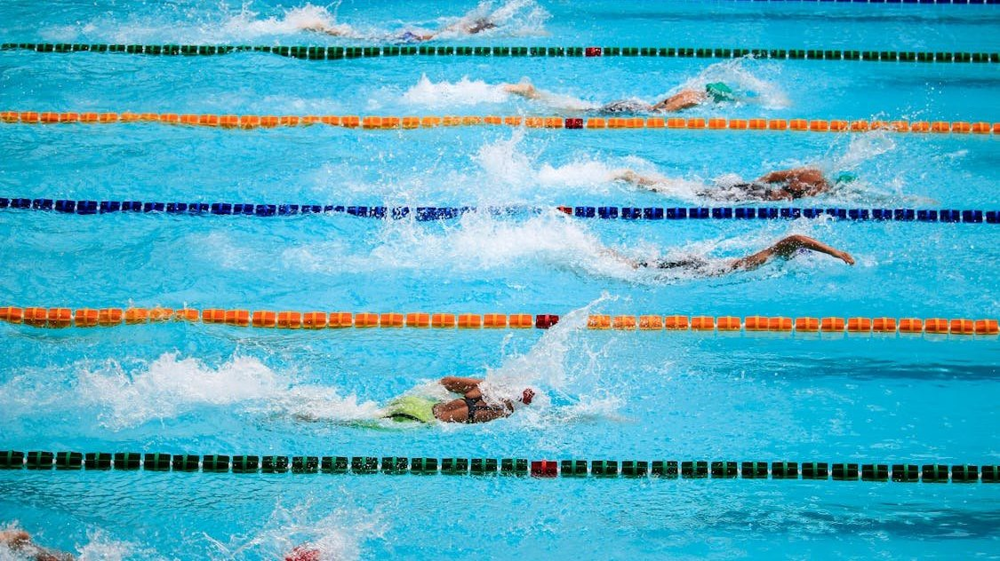

5 Best Drills to Improve Swimming Endurance
Endurance is the engine behind every great swimmer. Without it, even the most technically gifted athletes hit a wall mid-race or mid-practice. The good news is that endurance is trainable — and with the right drills, young swimmers can build a serious aerobic base while reinforcing strong technique at the same time.
These five drills are staples in high-level training programs for a reason. They're efficient, scalable, and they work.
1. Descending Sets
Descending sets teach swimmers to manage effort over a sustained period while gradually increasing intensity. A classic setup looks like this: swim 4 x 100 on 2:00, with each 100 slightly faster than the last.
The goal is controlled progression — not all-out sprinting. This drill trains the body to sustain aerobic output while the mind learns to pace strategically. Over time, swimmers develop a sharper sense of their own threshold and how to push it without blowing up.
Coaching Tip
Encourage athletes to focus on stroke count per length during descending sets. Maintaining or reducing stroke count as speed increases is a sign of true efficiency — not just effort.
2. Broken Swims
Broken swims involve completing a longer distance with short, timed rest intervals built in mid-swim. For example, a broken 400 might be swum as 4 x 100 with 10 seconds rest between each, targeting a combined time close to an unbroken effort.
This drill bridges the gap between interval training and race-pace swimming. It builds endurance by accumulating high-quality volume without the fatigue that comes from grinding through long, slow sets.
3. Pulling with a Band
Removing the kick entirely by using a pull buoy and ankle band forces the upper body to carry the full workload. This is one of the most effective ways to build pulling strength and cardiovascular endurance simultaneously.
Swimmers who train regularly with band pulling develop more powerful catches and stronger through-water propulsion — qualities that directly translate to faster, more sustainable race swimming.
Coaching Tip
Start with shorter distances and build up. Band pulling places real demand on the shoulders, so progressive loading is key — especially for younger athletes still developing their strength base.
4. Tempo Trainer Sets
A tempo trainer is a small metronome swimmers wear under their cap to set a consistent stroke rate. Using it during endurance sets keeps athletes from falling into the habit of slowing their stroke cycle when tired.
Pairing a tempo trainer with distance sets — like 8 x 200 — teaches swimmers to hold a target rate across fatigue. This is exactly the kind of discipline that separates athletes who fade in the back half of a race from those who finish strong.
5. Hypoxic Ladder Sets
Hypoxic training involves limiting breathing patterns to develop a higher tolerance for carbon dioxide buildup — a key factor in late-race endurance. A simple ladder set might progress from breathing every 3 strokes, to every 5, to every 7, then back down.
At Nexar Aquatic Academy, coaches introduce hypoxic sets gradually, always within a controlled environment with proper supervision. When done correctly, this drill produces meaningful gains in both lung capacity and mental toughness.
Putting It All Together
Endurance doesn't develop overnight — it's built through consistent, intentional training over weeks and months. The most effective programs, like those run at Nexar Aquatic Academy, layer these drills into a structured plan that balances volume, intensity, and recovery.
Young swimmers who commit to this kind of disciplined practice don't just get fitter — they develop the confidence that comes from knowing their body can handle whatever a race demands.
- Descending Sets — build pacing awareness and aerobic capacity
- Broken Swims — accumulate race-pace volume with controlled rest
- Band Pulling — isolate and strengthen the pulling phase
- Tempo Trainer Sets — maintain stroke rate under fatigue
- Hypoxic Ladders — increase CO2 tolerance and mental endurance
Add these drills to a regular training rotation and the results will speak for themselves in the water.
Ready to get in the water?
First practice is completely FREE — no commitment needed.